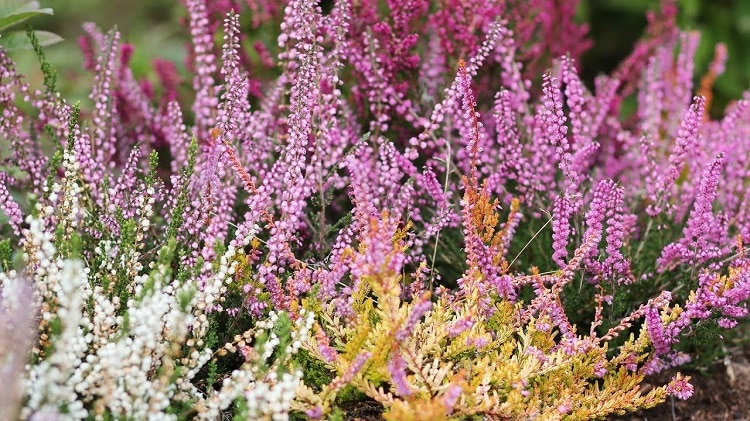
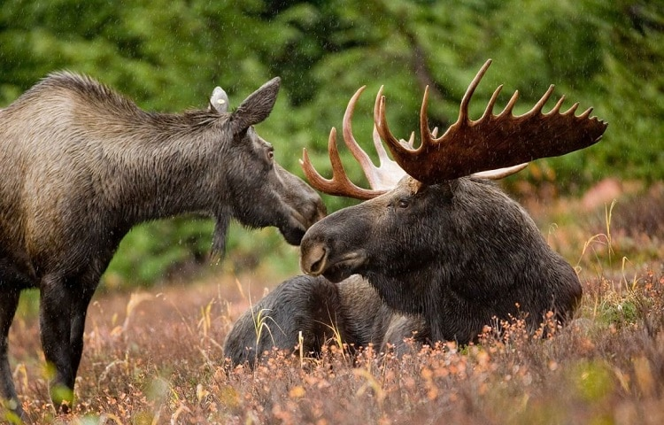

2.Перший подих осені
Перший місяць осені — вересень. Тихі, задумливі верес- неві дні ще теплі, наче літні. Та подих осені вже відчутний у вечірній і нічній прохолоді. День народжується в осінньому серпанку, але поступово туман зникає, розсіюється. Підніма- ється сонечко й обігріває землю.
Нерідко початок вересня дивує своїм теплом, яскравістю, здається, що літо повернулося. Сонце ще довго сяє на ясномунебосхилі, та воно вже не таке гаряче, як улітку, а ніжно-лас- каве, лагідне. Повітря прозоре й легке... Проте зменшення світла і зміна кольорів у природі вказують на осінь.
Вересень, бо верес
Виявляється, назва 9 українського місяця року приховує багато цікавинок і навіть таємниць.
Назва першого осіннього місяця походить з Полісся. Тут широко розповсюджена вічнозелена лікувальна рослина верес. Цвісти гарними фіолетовими квіточками верес починає в кінці серпня, а закінчить аж у кінці жовтня. Проте буйство вересового цвіту припадає саме на вересень. У цей період поліські лісові торф’яники, пагорби гарно вкриті квітучими килимками з вересу.
3.А як називали вересень наші предки?
Сучасна назва вересня в нашому календарі закріпилася лише на початку ХХ століття. До цього в кожному регіоні України були свої місцеві прізвиська. Наприклад, в давньоруській мові зустрічаємо назву «зарев» або «ревун» (руєн). Перша походить від жовтого кольору, адже саме у вересні починає жовтіти листя. А що символізує друга назва? Це звуки лісових тварин – на початку осені починали голосно ревти лосі та олені, влаштовуючи шлюбні герці.
У книжках часів Київської Русі збереглася назва «вареснєць». Вона пов’язана з першими осінніми заморозками, що розпочинаютьсяу вересні, та все ж ймовірніше тут також йдеться про верес.
На Заході України вересень здавна називали «сівень» і «маїк», що пов’язано з масовою сівбою збіжжя і «маянням» (сходом) озимини.
Назву вересня — «бабське (бабине) літо» зафіксували в розмовній мові на північно-західному Поліссі. (Пов’язана вона з роботою, котру жінки закінчували на полях і городах – прим. ред.) Ще одна назва вересня — «покрійний». Вона походить од свята Покрови, котре випадає на 1 жовтня за старим стилем. Під цю пору земля вже покривається листям. Адже з вересня, як мовиться в прислів'ї, листя на дереві не тримається. Проте переважна більшість європейських мов послуговуються латинською назвою «септембр», що означає «сьомий».
У Давньому Римі він і справді був сьомим. Адже річне літочислення починалося з березня. Прийнявши новий, так званий григоріанський календар, в якому новоріччя було перенесене на січень, місяценазву залишили старою, себто юліанською.
4.Павутиння літає — осінь літо проводжає
Коли в осінню погідну днину вийти в поле, у сад чи про- сто надвір, то можна побачити тисячі тоненьких павутинок, що летять у повітрі. Вони то хвилями опускаються ближче до землі, то знову здіймаються угору, чіпляються за гілки дерев, загорожі, будівлі і навіть за людей. Це па- вутиння люди називають бабиним літом…
Насправді це павутиння — цілком природна річ. У траві й на листі рослин живуть мільйони маленьких павучків-хрестяків. Їхня назва походить від того, що вони мають на спині білий знак у вигляді хреста. Ці павучки живляться ще дрібнішими комашками, які живуть поряд. А восени комашок ні на листі, ні в траві немає, тож павучки змушені на них полювати в повітрі.
5.Народні прикмети на вересень
- Грім віщує теплу осінь
- Листя на березі жовкне з верхівки – на ранню весну, знизу – на пізню
- Вересень слухає погоду січня, а якщо студений – то ситий
- Мокре літо і тепла осінь – на тривалу зиму
- Птахи співають у негоду – на погожий день
- На дубі багато жолудів – до лютої зими. Ще це свідчить про те, що перед Різдвом буде багато снігу
- Якщо осінь багата на гриби – зима буде тепла